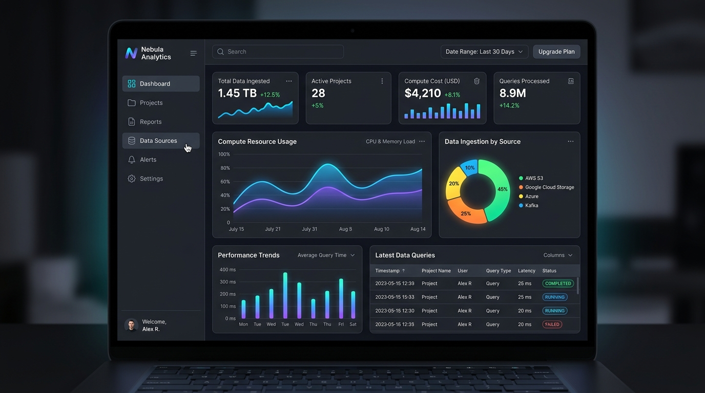
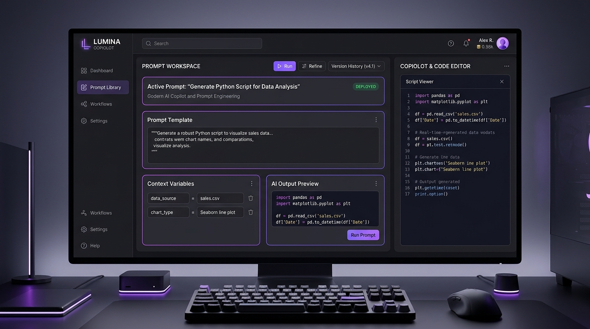
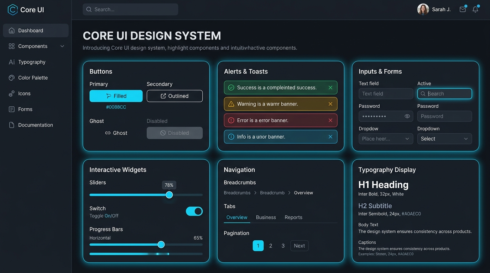

Nebula Analytics - 雲端數據即時監控儀表板
專為企業級分散式架構打造的即時監控 SaaS 平台，具備多源資料流整合、計算成本追蹤與動態可視化圖表分析。
React
Node.js
PostgreSQL
TailwindCSS
我是 許丞諒 (Cheng-Liang Hsu)，一名熱衷於現代 Web 技術與全端架構的工程師。從基礎扎實的程式思維出發，致力於將敏捷開發理念、模組化架構與前沿使用者體驗融合於每一個專案。
我深信「優秀的代碼是寫給人看的，只是恰好機器能執行」。在團隊中，我重視程式可維護性、清楚的技術文檔與順暢的跨領域溝通；在產品上，則對微互動細節、效能評估 (Core Web Vitals) 及響應式體驗有著高標準要求。
點選作品可查看技術架構與亮點功能

專為企業級分散式架構打造的即時監控 SaaS 平台，具備多源資料流整合、計算成本追蹤與動態可視化圖表分析。

串接大型語言模型 (LLM)，專為開發者設計的提示詞調校與代碼生成工作台，支援版本歷程追蹤與上下文變數管理。

遵循 WAI-ARIA 無障礙標準的高彈性元件庫，內建流暢微互動動畫、深淺色主題 token 系統與完整的開發文檔。
主導多項現代化 Web 應用程式開發，建構高吞吐量後端 API 與響應式前端介面；落實 CI/CD 自動化測試與部屬，提升系統可靠度與代碼品質。
參與企業內部後台管理系統重構，將傳統單體架構模組化。協助撰寫單元測試覆蓋率超過 85%，並針對資料庫複雜查詢進行效能調校。
深耕計算機科學核心基礎（演算法、資料結構、作業系統、網路協議與資料庫原理）。期間積極投入開源專案與校園黑客松競賽，獲取實戰協作經驗。
期待與您探討專案合作、技術觀點或探索未來的可能性！
ChengLiangHsu@users.noreply.github.com
台灣 (Taiwan)
支援現場 / 遠端工作 (Remote)